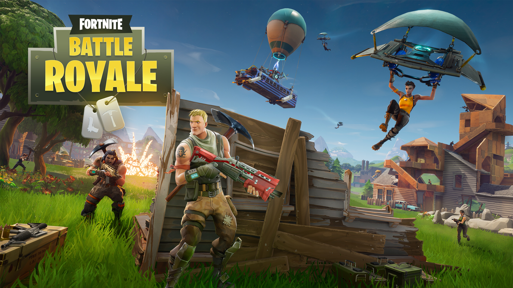

Bem-vindo ao mundo do Fortnite
Este site foi criado para apresentar informações sobre Fortnite, um dos jogos mais conhecidos do mundo.

Sobre o projeto
Aqui você poderá conhecer a história do jogo, seus personagens, armas, mapas, temporadas, eventos e várias curiosidades.
Conheça o Fortnite
- História do jogo
- Temporadas
- Personagens
- Armas
- Skins
- Eventos